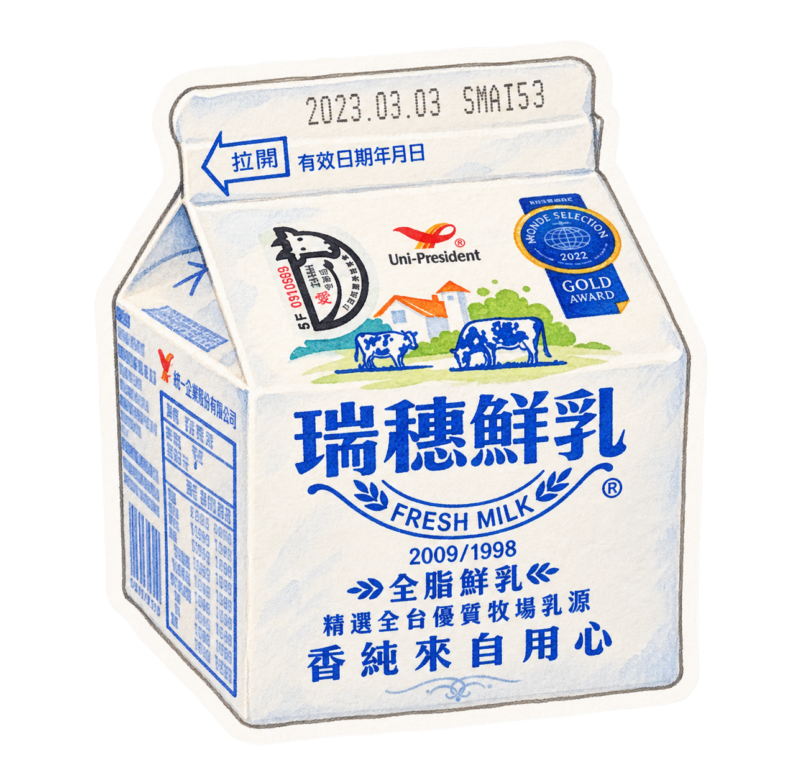

MEMORY JOURNAL
阿明的日記
◇
回憶碎片
0 / 30
JOURNEY ARCHIVE
旅程日誌
沿著鐵道，翻閱曾經找回的記憶。
01
TAIWAN
板橋
尚未開放
◇
02
NEW TAIPEI
福隆
尚未開放
◇
03
TAINAN
台南
尚未開放
◇
04
HUALIEN
瑞穗
尚未尋回
◇
05
UNKNOWN
？？？
尚未尋回
◇
06
UNKNOWN
？？？
尚未尋回
◇
← 返回旅程日誌
阿明的記憶
我的旅程
◇
這段記憶尚未尋回。
前往瑞穗站探索
也可以切換到「我的旅程」，先寫下旅行心得。
瑞穗・第一段記憶
瑞穗站，乳牛裝置
◇ NEW MEMORY
阿明的日記
瑞穗
…
我好像來過這裡。
看到那隻乳牛的時候， 突然想起了一點什麼。
✓ 瑞穗・第一段記憶已完成・返回地圖

◇
獲得記憶碎片
瑞穗・01
MY TRIP・瑞穗
＋
加入旅行照片
記錄今天看見的風景
MY TRAVEL NOTE
瑞穗
儲存這段旅程
⌂
首頁
⌖
探索
▤
日記
☆
活動
♙
旅團